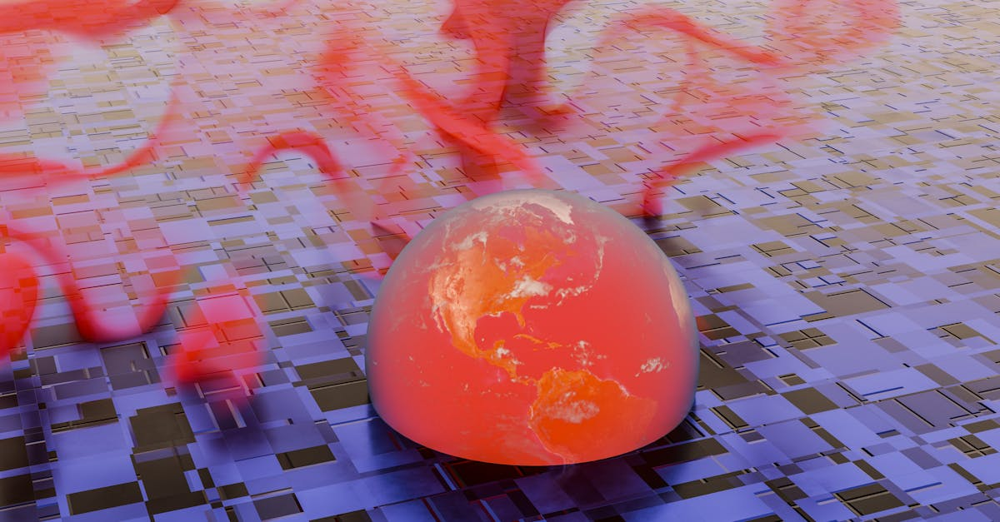

SpaceX : Une Étoile Filante à 1250 Milliards de Dollars ?
L'univers de la finance est souvent le théâtre de transactions qui défient l'imagination. La récente annonce de la vente par Blue Owl de la moitié de sa participation dans SpaceX, valorisant l'entreprise d'Elon Musk à un stupéfiant 1250 milliards de dollars, en est un exemple frappant. Ce chiffre, qui place SpaceX parmi les entreprises les plus valorisées au monde, même avant une éventuelle introduction en bourse, soulève une multitude de questions. Comment une entreprise privée peut-elle atteindre une telle valorisation ? Quels sont les mécanismes sous-jacents qui justifient une telle confiance des investisseurs ? Et surtout, quelles leçons les acteurs des marchés publics, qu'ils soient investisseurs individuels ou institutionnels, peuvent-ils tirer de ces mouvements colossaux sur les marchés privés ?
👉 À lire : OppFi rachète BNCCORP: Que cachent les 130M$?
Blue Owl, un gestionnaire d'actifs alternatifs spécialisé dans les marchés privés, a donc monétisé une partie significative de son investissement, signalant à la fois un succès retentissant et une possible réévaluation des perspectives futures. Cette transaction n'est pas qu'une simple vente d'actions ; elle est un baromètre de l'appétit insatiable du capital pour l'innovation disruptive et les promesses de rendements exponentiels, même dans un contexte de marché incertain. Elle met en lumière la dichotomie croissante entre les valorisations des entreprises privées, souvent perçues comme plus agiles et à fort potentiel de croissance, et celles des marchés publics, parfois plus sujettes aux fluctuations macroéconomiques et aux humeurs des investisseurs. Comprendre ces dynamiques est crucial pour quiconque s'intéresse à l'investissement moderne, qu'il s'agisse d'actions, d'ETF ou d'indices boursiers.
👉 À lire : KONE : Résultats T1, une performance sous haute surveillance
Le secteur spatial, autrefois l'apanage des gouvernements, est désormais un terrain de jeu pour des géants privés comme SpaceX, qui redéfinissent les frontières de la technologie et du commerce. Leur capacité à innover et à exécuter des projets d'une envergure sans précédent, de Starlink à Starship, justifie en partie ces valorisations vertigineuses. Mais une telle valorisation est-elle soutenable ? Représente-t-elle une bulle spéculative ou le reflet d'une croissance future réellement exponentielle ? C'est ce que nous allons explorer en détail, en décortiquant les moteurs de cette valorisation et ses implications pour le monde de la finance.

Décrypter la Valorisation : Les Piliers d'une Économie Spatiale Trillionnaire
Atteindre une valorisation de 1250 milliards de dollars pour une entreprise non cotée en bourse est un exploit qui mérite une analyse approfondie. Qu'est-ce qui justifie un tel montant ? La réponse réside dans la convergence de plusieurs facteurs clés. Premièrement, SpaceX n'est pas une entreprise ordinaire. Elle opère à la confluence de plusieurs secteurs d'avenir : l'exploration spatiale, les télécommunications par satellite (Starlink) et le transport hypersonique. Chacun de ces piliers représente un marché potentiel de plusieurs centaines de milliards de dollars, voire de milliers de milliards, à mesure que la technologie mûrit et que les infrastructures se déploient.
Le projet Starlink, en particulier, est un moteur de croissance phénoménal. Avec des milliers de satellites en orbite et des millions d'abonnés potentiels à travers le monde, il promet de révolutionner l'accès à internet, y compris dans les zones les plus reculées. Les revenus générés par Starlink sont déjà significatifs et devraient croître de manière exponentielle. Ensuite, il y a la domination de SpaceX sur le marché des lancements spatiaux. Sa capacité à réutiliser les fusées Falcon 9 a transformé l'économie des lancements, rendant l'accès à l'espace plus abordable et plus fréquent. Le développement de Starship, un système de transport entièrement réutilisable conçu pour des missions martiennes, mais aussi pour des voyages intercontinentaux sur Terre, ouvre des perspectives encore plus vastes et futuristes.
Les analystes financiers qui évaluent des entreprises privées comme SpaceX utilisent souvent des méthodes de valorisation basées sur les flux de trésorerie actualisés (DCF) ou des multiples d'entreprises comparables (lorsqu'ils existent). Cependant, pour une entreprise aussi unique et disruptive que SpaceX, une part significative de la valorisation repose sur des hypothèses de croissance future extrêmement agressives et sur la prime d'innovation. Comme le disait un expert fictif en capital-risque : « Investir dans SpaceX, c'est investir dans un futur que nous sommes encore en train d'imaginer, mais dont les fondations sont déjà posées. » C'est cette projection audacieuse dans le futur qui attire les investisseurs de capital-investissement et justifie de telles primes. Il est fascinant de voir comment ces prévisions peuvent influencer les décisions d'investissement sur des horizons très longs, bien au-delà des cycles boursiers habituels.
Implications pour l'Investissement Privé et les Marchés Publics
La transaction de Blue Owl sur SpaceX n'est pas seulement une nouvelle financière ; elle est un signal fort pour l'ensemble du marché de l'investissement. Pour les gestionnaires d'actifs alternatifs, elle valide la stratégie d'investissement dans des entreprises technologiques à forte croissance sur les marchés privés, même à des valorisations élevées. Blue Owl a non seulement réalisé un gain substantiel, mais a également démontré la liquidité potentielle, bien que limitée, de ces actifs. Cela pourrait encourager d'autres fonds à chercher des opportunités similaires, alimentant ainsi la compétition pour les participations dans les entreprises privées les plus prometteuses.
Cependant, cette liquidité n'est pas sans défis. Les marchés secondaires pour les actions d'entreprises privées restent moins transparents et plus complexes que les marchés boursiers traditionnels. Les investisseurs doivent naviguer dans un labyrinthe de réglementations et de négociations directes, loin de la fluidité des plateformes de trading d'actions ou d'ETF. Pour autant, l'attrait est indéniable : les entreprises restent privées plus longtemps, accumulant une valeur considérable avant une éventuelle IPO, ce qui offre des opportunités de croissance que les marchés publics ne peuvent parfois plus égaler sur les phases initiales.
« Le véritable défi pour les investisseurs institutionnels est de trouver le bon point d'entrée et de sortie dans ces géants privés, avant qu'ils ne deviennent des mastodontes publics où les marges de manœuvre sont moindres, » observe un analyste financier.
Pour les marchés publics, cette valorisation de SpaceX a des répercussions indirectes mais significatives. Elle renforce la thèse selon laquelle l'innovation de rupture se déroule en grande partie en dehors des bourses traditionnelles. Cela pousse les investisseurs en actions et ETF à rechercher des entreprises cotées qui pourraient être des fournisseurs, des partenaires ou même des concurrents indirects de SpaceX. Par exemple, les entreprises de semi-conducteurs, de matériaux avancés ou de logiciels spécialisés dans l'IA pour l'aérospatiale pourraient bénéficier de cette dynamique. L'analyse des chaînes de valeur et des écosystèmes devient alors essentielle pour identifier les opportunités d'investissement indirectes générées par de telles méga-valorisations privées. C'est là que l'IA peut jouer un rôle prépondérant en identifiant rapidement ces corrélations et en anticipant les mouvements du marché.

SpaceX, l'Économie Spatiale et l'Avenir des Marchés Financiers
L'ascension fulgurante de SpaceX est emblématique de la nouvelle économie spatiale, un secteur en pleine expansion qui promet de transformer de multiples industries. Au-delà des lancements de satellites et de l'exploration martienne, l'économie spatiale englobe des domaines aussi variés que l'observation de la Terre, la fabrication en orbite, le tourisme spatial et même l'extraction de ressources. Selon certaines estimations, cette économie pourrait atteindre plusieurs milliers de milliards de dollars d'ici quelques décennies. SpaceX, en tant que leader incontesté, est au cœur de cette révolution.
Cette expansion a des implications profondes pour les marchés financiers. Elle crée de nouvelles classes d'actifs et de nouvelles opportunités d'investissement. Les ETF thématiques axés sur l'espace, par exemple, connaissent un intérêt croissant. Mais l'impact ne se limite pas aux investissements directs dans le secteur spatial. Les innovations développées par SpaceX, qu'il s'agisse de matériaux composites, de systèmes de propulsion avancés ou d'intelligence artificielle embarquée, ont des retombées dans d'autres secteurs technologiques et industriels. Pensez aux avancées en matière de batteries ou de capteurs qui pourraient trouver des applications terrestres. Le rôle des indices boursiers sera également amené à évoluer, potentiellement avec l'introduction de nouvelles pondérations sectorielles pour mieux refléter l'importance croissante de l'économie spatiale et des entreprises qui la composent.
La question qui se pose est de savoir comment les investisseurs traditionnels peuvent se positionner face à cette dynamique. Faut-il attendre l'IPO de SpaceX, si elle a lieu un jour ? Ou faut-il plutôt se tourner vers les entreprises publiques qui bénéficient déjà de l'essor de l'économie spatiale ? L'anticipation est la clé. Les investissements dans les entreprises de télécommunications qui pourraient voir leur modèle d'affaires perturbé ou renforcé par Starlink, les fabricants de composants électroniques ou les entreprises d'ingénierie aérospatiale sont autant de pistes à explorer. Le marché est en constante évolution, et les outils d'analyse traditionnels peinent parfois à saisir la complexité des interconnexions entre ces secteurs. Une approche dynamique et basée sur des données en temps réel est plus que jamais nécessaire pour naviguer dans ces eaux complexes.
L'Analyse Prédictive à l'Ère des Mégavalorisations et le Rôle de l'IA
Dans ce paysage financier où les valorisations atteignent des sommets vertigineux et où l'innovation est le principal moteur de croissance, la capacité à analyser, anticiper et réagir rapidement est devenue primordiale. C'est précisément là que l'intelligence artificielle (IA) et l'analyse prédictive révèlent toute leur puissance. Face à des événements comme la vente de la participation de Blue Owl dans SpaceX, qui modifient les perceptions du marché et créent de nouvelles dynamiques, les investisseurs ont besoin d'outils sophistiqués pour décrypter les signaux faibles et forts.
Comment l'IA peut-elle aider ? Premièrement, par l'analyse de données massives. L'IA peut traiter des volumes colossaux d'informations – rapports financiers, actualités sectorielles, brevets, données satellitaires sur les lancements, sentiments des réseaux sociaux – pour identifier des tendances et des corrélations que l'œil humain manquerait. Par exemple, elle pourrait détecter des mouvements de capitaux vers des entreprises de la chaîne d'approvisionnement de SpaceX ou des concurrents, bien avant que ces informations ne deviennent publiques ou ne soient intégrées dans les cours boursiers. Deuxièmement, l'IA excelle dans la modélisation prédictive. En se basant sur des données historiques et des algorithmes d'apprentissage automatique, elle peut évaluer la probabilité de succès de futurs projets (comme Starship) et leur impact potentiel sur la valorisation de l'entreprise et, par ricochet, sur les secteurs connexes cotés en bourse.
Pour les traders d'actions, d'ETF et d'indices, cela signifie une capacité accrue à prendre des décisions éclairées. Imaginez un système capable de surveiller en permanence le marché spatial, d'analyser les annonces de contrats, les lancements réussis, les avancées technologiques et d'en déduire les implications pour les actions des fabricants de satellites, des fournisseurs de services de lancement ou des entreprises de télécommunications. Cette capacité à lier des événements macro et microéconomiques à des mouvements de marché spécifiques est le Saint Graal de l'investissement. Les systèmes d'IA peuvent identifier des opportunités d'arbitrage ou des stratégies de couverture que les méthodes traditionnelles ne verraient pas, offrant un avantage concurrentiel significatif dans un monde financier de plus en plus complexe et rapide.

Conclusion : Naviguer dans l'Ère des Mégavalorisations avec l'Intelligence Artificielle
La transaction de Blue Owl sur SpaceX est bien plus qu'une simple opération financière. Elle est un témoignage éclatant de la transformation profonde des marchés, où l'innovation technologique et les ambitions démesurées redéfinissent les règles du jeu. La valorisation de 1250 milliards de dollars attribuée à SpaceX n'est pas seulement un chiffre ; elle est le reflet d'une confiance audacieuse dans le potentiel disruptif de l'économie spatiale et la capacité d'une entreprise à remodeler l'avenir.
Pour les investisseurs, qu'ils opèrent sur les marchés privés ou publics, cette ère des mégavalorisations exige une nouvelle approche. L'analyse traditionnelle, bien que toujours pertinente, doit être complétée par des outils capables de traiter la complexité et la vitesse des informations. C'est ici que l'intelligence artificielle devient non pas un luxe, mais une nécessité. En anticipant les tendances, en identifiant les opportunités cachées et en gérant les risques avec une précision inégalée, l'IA offre une boussole indispensable dans un océan d'incertitudes.
L'avenir de l'investissement est intrinsèquement lié à la capacité à exploiter la puissance des données et de l'IA. Que vous soyez un professionnel cherchant à optimiser vos portefeuilles d'actions et d'ETF, ou un investisseur souhaitant comprendre les forces qui animent les indices boursiers, un copilote IA capable de trader pour vous 24h/24 devient un atout inestimable. Il ne s'agit plus de prédire l'avenir avec une boule de cristal, mais de le modéliser avec des algorithmes sophistiqués, afin de transformer les défis de cette nouvelle ère financière en opportunités de croissance. La prochaine décennie promet d'être riche en innovations et en valorisations spectaculaires ; ceux qui sauront s'équiper des meilleurs outils seront les mieux positionnés pour en tirer parti.